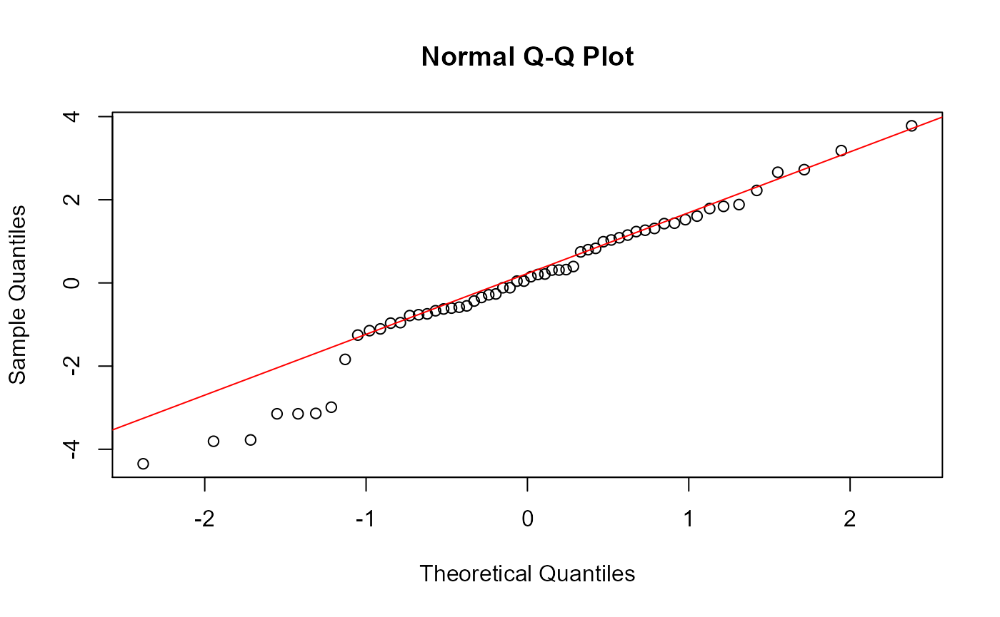

Tutorial.RmdUse this command to install the package. When prompted, enter ‘3’ to skip updates.
devtools::install_github("tbrock0122/tlb.project")Don’t forget to read in the package as well.
library(tlb.project)This package is meant to streamline the process of performing simple statistical analyses using linear data. Namely, performing linear regression analyses and analyses of variance between two variables in a data set.
provide rationale for why someone might need to do this analysis. explain how functions work (e.g. what types of data used, what outputs are, what’s expected for inputs)
Simple linear regressions are used to determine the relationship between a response variable and a single numerical predictor variable. This function allows you to fit your chosen data to a linear model, perform the regression, and print the resulting statistics to the screen in a single line of code. Simply provide which columns of data you’d like to investigate, making sure that variable_2 is numerical data.
file_path <- system.file("extdata", "Data.csv", package="tlb.project")
Data <- read.csv(file_path)
linear_regression(Data$Estimated_Age, Data$SVL)##
## Call:
## lm(formula = variable_1 ~ variable_2)
##
## Residuals:
## Min 1Q Median 3Q Max
## -4.3493 -0.7593 0.0971 1.2137 3.7783
##
## Coefficients:
## Estimate Std. Error t value Pr(>|t|)
## (Intercept) -11.32173 0.99543 -11.37 3.51e-16 ***
## variable_2 1.59581 0.04921 32.43 < 2e-16 ***
## ---
## Signif. codes: 0 '***' 0.001 '**' 0.01 '*' 0.05 '.' 0.1 ' ' 1
##
## Residual standard error: 1.765 on 56 degrees of freedom
## Multiple R-squared: 0.9494, Adjusted R-squared: 0.9485
## F-statistic: 1051 on 1 and 56 DF, p-value: < 2.2e-16Function 2 is very similar to Function 1 in that both use the same inputs and both perform a linear regression, though the outputs are completely different. This function checks if the residuals from the linear regression have a normal distribution, and prints a Normal Q-Q Plot to the screen for us to interpret. The closer the data lie to the line, the more normal the distribution.
linear_regression_full(Data$Estimated_Age, Data$SVL)
## NULLIn this example, the majority of the data lie on or close to the line, implying normality, though the values at the lower extreme show greater deviation
Simple ANOVA are used to determine the relationship between a response variable and a single categorical predictor variable.
simple_anova(Data$SVL, Data$Life_Stage)## Df Sum Sq Mean Sq F value Pr(>F)
## variable_2 2 766.3 383.2 40.48 1.55e-11 ***
## Residuals 55 520.5 9.5
## ---
## Signif. codes: 0 '***' 0.001 '**' 0.01 '*' 0.05 '.' 0.1 ' ' 1